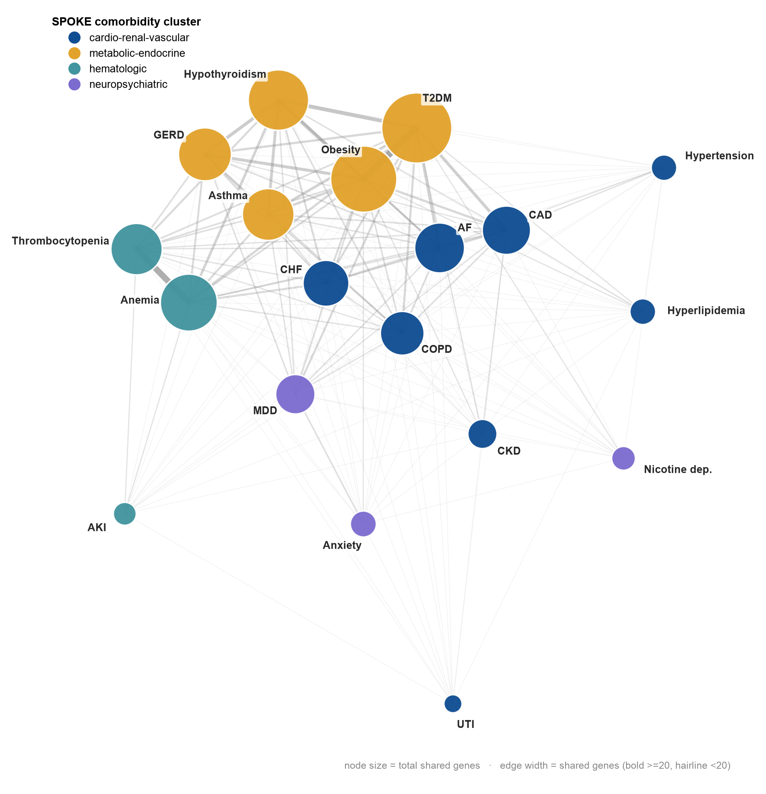
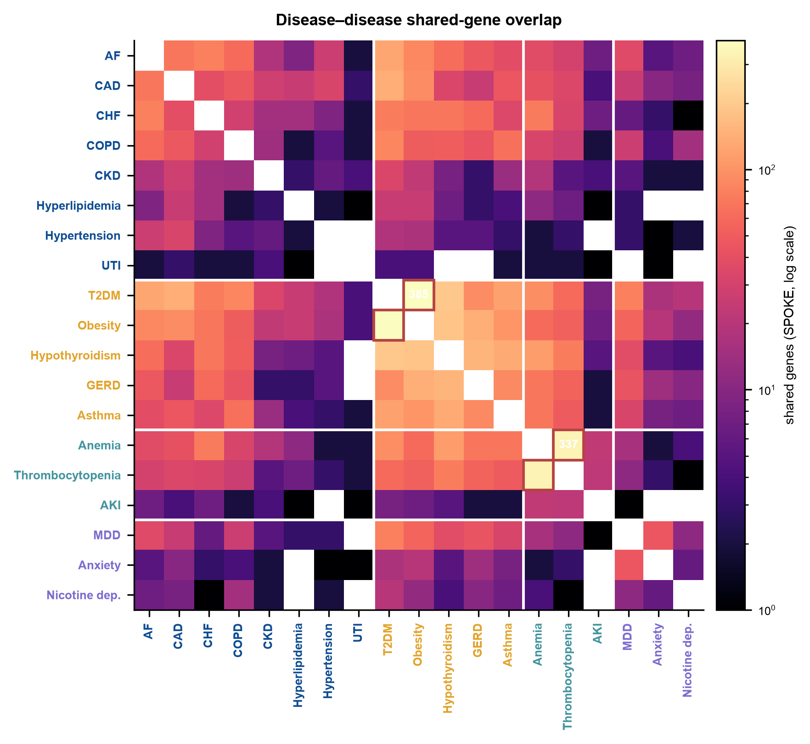
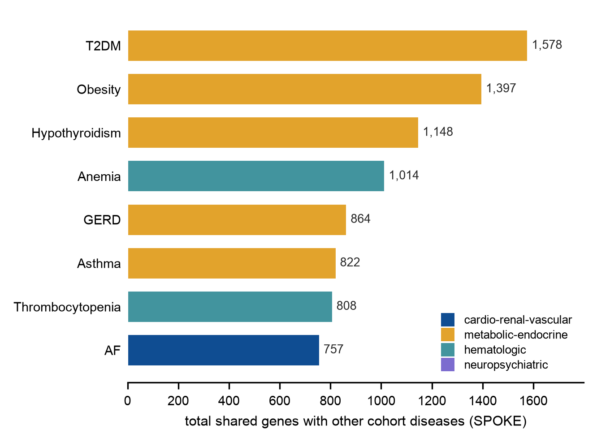

Original, exploratory descriptive comorbidity-network study · MedCP (EHR) + SPOKE (knowledge graph)
Provenance legend: EHR measured in the clinical records (via MedCP) · SPOKE derived from the biomedical knowledge graph (via MedCP). Cluster tags: cardio-renal-vascular metabolic-endocrine hematologic neuropsychiatric
Source study. EHR Original study on Synthetic Dataset (synthetic MIMIC-IV/OMOP demo, date-shifted; no published paper). Design: descriptive comorbidity-network study; unit of analysis = person; N = 100.
What the EHR alone shows. EHR The condition_occurrence table holds
16,441 rows. Filtering to true billed diagnoses (condition_type_concept_id = 32821) yields
3,833 ICD-coded diagnosis rows spanning 1,217 distinct ICD codes across all 100 patients — a mix of
ICD-9-CM (579 codes) and ICD-10-CM (638 codes). Comorbidity burden is high (ICU cohort): a median of
18.5 distinct diagnoses per patient (IQR 8-33, range 2-134). The most frequent codes are cardiometabolic
(hypertension 4019: 41 patients; hyperlipidemia 2724/E785; type-2 diabetes 25000; coronary disease 41401;
atrial fibrillation 42731). Critically, these codes carry no human-readable name in this dataset — the local
OMOP concept table contains only mimiciv_* vocabularies and no ICD9CM/ICD10CM, so a code such
as E039 is opaque without external knowledge.
What SPOKE adds. SPOKE The most frequent codes were decoded to
19 distinct disease concepts (knowledge-based proxy; ICD-9 and ICD-10 codes for the same entity collapsed),
and every one resolved to a SPOKE Disease node (18 exact, 1 approximate). SPOKE then turned these
opaque codes into a biological network: of 171 disease pairs, 161 (94.2%) share at least one associated gene
(ASSOCIATES_DaG). A Jaccard-thresholded network (81 edges) resolves into four clinically coherent modules
(modularity 0.204): a cardio-renal-vascular cluster, a metabolic-endocrine cluster, a hematologic cluster, and a
neuropsychiatric cluster. The strongest biological links — type-2 diabetes–obesity (385 shared genes) and
anemia–thrombocytopenia (Jaccard 0.38) — are exactly the pairs that also co-occur most in the same patients,
so the knowledge graph supplies a plausible shared-biology explanation for observed comorbidity.
Bottom line. SPOKE converts an unreadable list of billing codes into a labelled, biologically-wired disease network. This is the clearest demonstration of the knowledge graph's contribution in the benchmark: the EHR supplies the codes and their counts; SPOKE supplies the names, the shared-gene edges, and the comorbidity clusters — none of which exist in the clinical record.
Reporting standard: STROBE + RECORD (routinely-collected health data), applied to a descriptive cross-sectional comorbidity-network design. This is not an effect-estimation study, so STROBE/RECORD is recorded as the closest applicable standard and the descriptive-only scope is a deliberate, documented deviation (no exposure/outcome contrast, no STaRT-RWE/HARPER design table).
| Field | Value |
|---|---|
| Citation (source study) | original study on Synthetic Dataset |
| Design of source study | original study on Synthetic Dataset — descriptive comorbidity network |
| Reporting standard applied | STROBE + RECORD (closest applicable; descriptive-only deviation recorded) |
| Setting / calendar timeframe | Synthetic, date-shifted MIMIC-IV ICU demo (OMOP CDM); calendar dates are shifted and not interpretable |
| Unit of analysis | Person (patient); N = 100 |
| Primary "endpoint" | Not applicable — descriptive. Object of interest = the disease-disease network derived from each patient's ICD-coded diagnoses |
| Primary estimand | Not applicable (no exposure-outcome contrast). Descriptive quantities: code prevalence, per-patient burden, shared-gene edges, network modules |
| Time zero (index date) | Not applicable — explicit assumption: diagnoses are pooled over each patient's entire available record (cumulative lifetime coding), consistent with a cross-sectional comorbidity description |
| Eligibility assessment window | Entire record; all 100 persons with ≥1 billed ICD diagnosis are eligible (all 100 qualify) |
| Baseline lookback window | Not applicable (no index date) — full record used |
| Exposure ascertainment / washout | Not applicable (no exposure defined) |
| Follow-up start / end / censoring | Not applicable (no time-to-event); no follow-up, death, LTFU or switching censoring is modelled |
| Competing risks | Not applicable (no time-to-event outcome) |
| Immortal-time / timeline-direction check | Not applicable — no exposure→outcome timeline exists in a cross-sectional network; no interval is classified as exposed follow-up and no outcome window is opened |
| Design element | Original paper | This analysis | Deviation / expected effect |
|---|---|---|---|
| Data source | original study on Synthetic Dataset | Synthetic MIMIC-IV/OMOP demo via MedCP | Synthetic + ICU-only + 100 patients → case mix skewed to critical-care cardiometabolic disease; not generalizable |
| Diagnosis capture | original study on Synthetic Dataset | ICD-9/ICD-10 in condition_source_value, filtered to billing type 32821 | Excludes chart-rhythm labels + chart items (ETOH, post-menopausal); improves specificity for true diagnoses |
| Code→disease decode | original study on Synthetic Dataset | Knowledge-based proxy (skill 2D), SPOKE-resolved to DOID | Manual decode covers frequent codes only; long-tail codes undecoded (coverage limitation, below) |
| Network construction | original study on Synthetic Dataset | SPOKE ASSOCIATES_DaG shared genes; networkx | RESEMBLES_DrD absent for these diseases; network rests on the shared-gene layer only |
| Statistical model | original study on Synthetic Dataset | Descriptive (prevalence, Jaccard, greedy-modularity communities) | No effect estimate → event counts / minimum detectable effect not applicable |
| Step | Rows / codes | Note |
|---|---|---|
All condition_occurrence rows | 16,441 | 100 patients |
| − Free-text rhythm-monitor labels (13 chart categories: SR, AF, ST, V Paced, SB, A Paced, 1st-AV block, A Flut, JR, SA, AV Paced, SVT, LBBB) | −~12,434 | Chart-derived rhythm states, not billed diagnoses |
| − Numeric chart items misread as codes (225106 = ETOH; 225085 = post-menopausal; type 32817) | −174 | Excluded by billing-type filter |
| = ICD-coded billed diagnoses (type 32821) | 3,833 rows / 1,217 distinct codes | ICD-9: 579 codes (1,779 rows); ICD-10: 638 codes (2,054 rows) |
Grounded sanity check: ICD codes (e.g. 4019, E785, E039) co-exist with
rhythm labels (e.g. AF (Atrial Fibrillation)) in the same condition_source_value column; all 100
persons are present.
Distinct billed ICD codes per patient: median 18.5 (IQR 8-33), range 2-134, mean 26.2; 2,621 total patient-code pairs. The heavy right tail (max 134 distinct codes in one patient) is characteristic of long, complex ICU admissions.
Rank by number of distinct patients carrying the code. The disease-name column is the knowledge-based decode (documented proxy) subsequently resolved in SPOKE. Note how ICD-9 and ICD-10 codes for the same entity appear separately (e.g. 4019 & I10 → hypertension; 2724 & E785 → hyperlipidemia; 42731 & I4891 → atrial fibrillation; 5849 & N179 → acute kidney failure).
| Code | Vocab | Patients | Occurrences | Decoded disease (→ SPOKE) |
|---|---|---|---|---|
| 4019 | ICD-9 | 41 | 68 | Essential hypertension |
| 2724 | ICD-9 | 34 | 55 | Hyperlipidemia (unspecified) |
| E785 | ICD-10 | 21 | 57 | Hyperlipidemia (unspecified) |
| 25000 | ICD-9 | 21 | 33 | Type 2 diabetes mellitus |
| 41401 | ICD-9 | 19 | 28 | Coronary artery disease |
| 42731 | ICD-9 | 18 | 34 | Atrial fibrillation |
| 3051 | ICD-9 | 18 | 24 | Tobacco/nicotine dependence |
| 2859 | ICD-9 | 18 | 23 | Anemia |
| I10 | ICD-10 | 17 | 32 | Essential hypertension |
| 311 | ICD-9 | 16 | 30 | Major depressive disorder |
| N179 | ICD-10 | 15 | 31 | Acute kidney failure |
| 5849 | ICD-9 | 15 | 25 | Acute kidney failure |
| 53081 | ICD-9 | 15 | 22 | GERD |
| 5990 | ICD-9 | 15 | 21 | Urinary tract infection |
| D62 | ICD-10 | 15 | 20 | Anemia (acute posthemorrhagic) |
| 40390 | ICD-9 | 14 | 27 | Chronic kidney disease (hypertensive) |
| I2510 | ICD-10 | 13 | 33 | Coronary artery disease |
| 4280 | ICD-9 | 13 | 25 | Congestive heart failure |
| I4891 | ICD-10 | 13 | 23 | Atrial fibrillation |
| K219 | ICD-10 | 13 | 17 | GERD |
SPOKE resolution of decoded concepts: 19 / 19 succeeded (18 exact name matches + 1 approximate). SPOKE The single approximate resolution is hyperlipidemia (unspecified): the general polygenic lipid disorder (ICD 2724/E785/2720) has no exact Disease Ontology node in SPOKE; the nearest node is familial hyperlipidemia (DOID:1168), a Mendelian-variant proxy — flagged wherever it is used.
ICD-code coverage of the decode is partial by design. EHR The knowledge-based decode targeted the frequent codes: 115 / 1,217 distinct codes (9.4%) were decoded and resolved. Those codes nonetheless account for 1,459 / 3,833 ICD occurrences (38.1%) and 767 / 2,621 patient-code pairs (29.3%) — a small fraction of distinct codes carries a large share of the diagnostic burden (long-tail structure). The remaining 1,102 rare codes (mostly 1-2 patients each) were not individually decoded.
Two distinct limitations, kept separate: (a) SPOKE resolution did not largely fail — every disease concept we asked SPOKE to resolve was found. (b) The undecoded long tail is a scope / data-availability limitation of the manual decode step, not a SPOKE failure. Scaling: the network below describes the 19 resolved diseases, which represent the dominant, high-prevalence comorbidities of this cohort.
EHR prevalence = distinct patients carrying any decoded code for that disease (EHR). Genes =
ASSOCIATES_DaG degree in SPOKE. Cluster = greedy-modularity community (below).
| Disease | SPOKE DOID | Resolution | Genes (SPOKE) | Patients (EHR) | Cluster |
|---|---|---|---|---|---|
| Essential hypertension | DOID:10825 | exact | 56 | 53 | cardio-renal |
| Hyperlipidemia (unspecified) | DOID:1168 | approximate | 81 | 51 | cardio-renal |
| Anemia | DOID:2355 | exact | 747 | 43 | hematologic |
| Coronary artery disease | DOID:3393 | exact | 450 | 34 | cardio-renal |
| Type 2 diabetes mellitus | DOID:9352 | exact | 1,373 | 32 | metabolic |
| Acute kidney failure | DOID:3021 | exact | 49 | 32 | hematologic |
| Atrial fibrillation | DOID:0060224 | exact | 613 | 30 | cardio-renal |
| Chronic kidney disease | DOID:784 | exact | 84 | 29 | cardio-renal |
| Congestive heart failure | DOID:6000 | exact | 355 | 26 | cardio-renal |
| Major depressive disorder | DOID:1470 | exact | 366 | 24 | neuropsych |
| GERD | DOID:8534 | exact | 622 | 24 | metabolic |
| Thrombocytopenia | DOID:1588 | exact | 467 | 22 | hematologic |
| Urinary tract infection | DOID:0080784 | exact | 6 | 22 | cardio-renal |
| Obesity | DOID:9970 | exact | 904 | 20 | metabolic |
| Tobacco/nicotine dependence | DOID:0050742 | exact | 83 | 20 | neuropsych |
| Anxiety disorder | DOID:2030 | exact | 67 | 16 | neuropsych |
| Hypothyroidism | DOID:1459 | exact | 789 | 15 | metabolic |
| COPD | DOID:3083 | exact | 335 | 14 | cardio-renal |
| Asthma | DOID:2841 | exact | 516 | 13 | metabolic |
Note the gene-sparse nodes: urinary tract infection (6 genes), acute kidney failure (49), essential hypertension (56) — SPOKE's gene coverage is uneven, which limits how strongly these nodes can wire into the network regardless of clinical importance.
Connectivity. Among the 19 diseases (171 possible pairs), 161 pairs (94.2%) share ≥1 associated gene.
No RESEMBLES_DrD edge exists between any of these diseases (0 of 171), although 46,670 such edges exist
elsewhere in SPOKE — so the comorbidity network is built entirely on the shared-gene (ASSOCIATES_DaG) layer.
A structural graph thresholded at Jaccard ≥ 0.0239 (median non-zero) retains 81 edges.
Biological hubs (by total shared genes across neighbours): Type 2 diabetes (1,578) > Obesity (1,397) > Hypothyroidism (1,148) > Anemia (1,014) > GERD (864) > Asthma (822) > Thrombocytopenia (808) > Atrial fibrillation (757). By degree in the thresholded graph, coronary artery disease (14), atrial fibrillation (13) and COPD (13) are the most broadly connected.
Strongest disease-disease links. Type 2 diabetes–obesity share 385 genes (Jaccard 0.20); anemia– thrombocytopenia share 337 genes and have the highest normalized overlap (Jaccard 0.38); other strong links: T2DM–hypothyroidism (192), obesity–hypothyroidism (184), hypothyroidism–GERD (154), obesity–GERD (143), T2DM–coronary disease (139). Within the neuropsychiatric group, depression–anxiety share 46 genes (Jaccard 0.12).
Comorbidity clusters (greedy modularity, weight = Jaccard; modularity = 0.204):
These four modules were derived only from shared genes — SPOKE never saw which diseases co-occur in patients — yet they reproduce textbook comorbidity groupings (metabolic syndrome; cardio-renal axis; the anemia/thrombocytopenia/AKI critical-illness triad; the depression/anxiety/substance-use triad).
The EHR independently answers a different question — which diseases occur in the same patients — and the two views agree on the headline pairs, giving the biology face validity.
| Disease pair | Patients with both EHR | Shared genes SPOKE |
|---|---|---|
| Type 2 diabetes + Obesity | 9 | 385 |
| Anemia + Thrombocytopenia | 18 | 337 |
| Coronary artery disease + Atrial fibrillation | 19 | 72 |
| Hypertension + Hyperlipidemia | 34 | 2 |
| Hyperlipidemia + Coronary artery disease | 26 | 25 |
| Hypertension + Anemia | 24 | 2 |
| Anemia + Acute kidney failure | 24 | 23 |
| Hyperlipidemia + Type 2 diabetes | 24 | 25 |
The clinically "obvious" co-occurrences (hypertension+hyperlipidemia, 34 patients) can have few shared genes (just 2), while the strongest shared-gene pairs (diabetes-obesity 385; anemia-thrombocytopenia 337) are mechanistically, not merely epidemiologically, linked. The EHR tells you two diseases travel together; SPOKE proposes the molecular reason. (Co-occurrence counts are raw, over the shared 100-patient denominator, and unadjusted.)
Publication-ready static figures (matplotlib), generated by make_figures.py from the saved
SPOKE edges and cluster assignments (PNG shown; vector PDF/SVG alongside in figures/). Figure cluster
palette: blue = cardio-renal-vascular, gold = metabolic-endocrine,
teal = hematologic, violet = neuropsychiatric.

ASSOCIATES_DaG): each node is one of the 19
resolved diseases, node colour is the SPOKE-derived comorbidity cluster, node size is the total shared genes with the
other cohort diseases (hubs largest: type-2 diabetes 1,578, obesity 1,397, hypothyroidism 1,148), and edge width/opacity
encode the number of shared genes (bold backbone for ≥20 shared genes, faint hairlines below). The metabolic-endocrine
module (top) and the anemia–thrombocytopenia hematologic pair (left) form the densest cores; gene-sparse nodes
(UTI, AKI, hypertension) sit at the periphery. Force-directed layout, fixed seed. Every name, edge and cluster shown is
contributed by the knowledge graph — none exists in the EHR.

The EHR alone provided only opaque codes and their counts. Everything below was supplied by SPOKE via MedCP and
could not be obtained from the clinical record (whose concept table has no ICD vocabulary):
E039→hypothyroidism, 4019→essential hypertension, N179→acute kidney failure, etc.RESEMBLES_DrD edges among these diseases, and gene-sparse nodes (UTI = 6 genes) — knowable only by querying the graph.concept table holds only local mimiciv_* vocabularies (no ICD9CM/ICD10CM); code decoding therefore relies on external knowledge, documented as a proxy.RESEMBLES_DrD support. Disease-disease resemblance edges are absent for this disease set, so the network could use only one of the two intended edge types.ASSOCIATES_DaG genes indicate shared associations (often GWAS), not a proven shared mechanism or directional comorbidity risk.All data retrieved through MedCP (clinical SQL → data/*.csv; SPOKE Cypher →
kg/*.json); statistics & network in analysis.py
(uv run --with pandas --with networkx python study-M/analysis.py → analysis_results.json).
Full query list in queries.log. Key queries:
-- CLINICAL (SQLite OMOP) --------------------------------------------------
-- ICD billed diagnoses only (exclude chart rhythm labels + ETOH/post-menopausal chart items)
WITH icd AS (
SELECT person_id, TRIM(condition_source_value) AS code
FROM condition_occurrence
WHERE condition_type_concept_id = 32821 AND TRIM(condition_source_value) <> '')
SELECT code, COUNT(DISTINCT person_id) n_patients, COUNT(*) n_occ,
CASE WHEN code GLOB '[0-9]*' THEN 'ICD9' ELSE 'ICD10' END vocab
FROM icd GROUP BY code ORDER BY n_patients DESC; -- 1,217 codes
-- proof that ICD codes have no name here (concept table = local mimiciv_* only):
SELECT vocabulary_id, COUNT(*) FROM concept GROUP BY vocabulary_id; -- no ICD9CM/ICD10CM
-- SPOKE (Neo4j Cypher) ----------------------------------------------------
-- disease-gene edges for the 19 resolved DOIDs (network input, 7,963 rows)
MATCH (d:Disease)-[:ASSOCIATES_DaG]->(g:Gene)
WHERE d.identifier IN ['DOID:10825','DOID:1168','DOID:9352','DOID:3393','DOID:0060224',
'DOID:6000','DOID:784','DOID:3021','DOID:1470','DOID:2030','DOID:9970','DOID:1459',
'DOID:3083','DOID:2841','DOID:2355','DOID:1588','DOID:8534','DOID:0080784','DOID:0050742']
RETURN d.identifier AS doid, g.identifier AS gid, g.name AS gsym;
-- disease-disease resemblance among the set (result: 0 edges)
MATCH (a:Disease)-[:RESEMBLES_DrD]-(b:Disease)
WHERE a.identifier IN [<19 DOIDs>] AND b.identifier IN [<19 DOIDs>] AND a.identifier < b.identifier
RETURN DISTINCT a.name, b.name;
The exact prompt that produced this study (study-M-comorbidity-network.md):